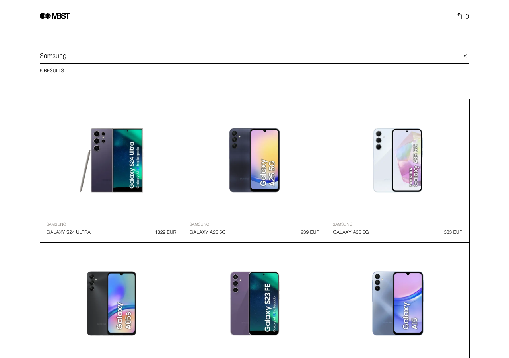
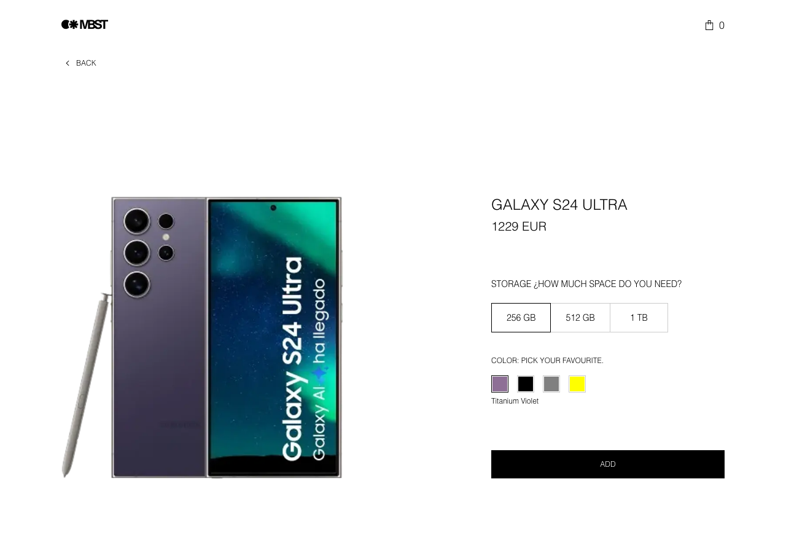
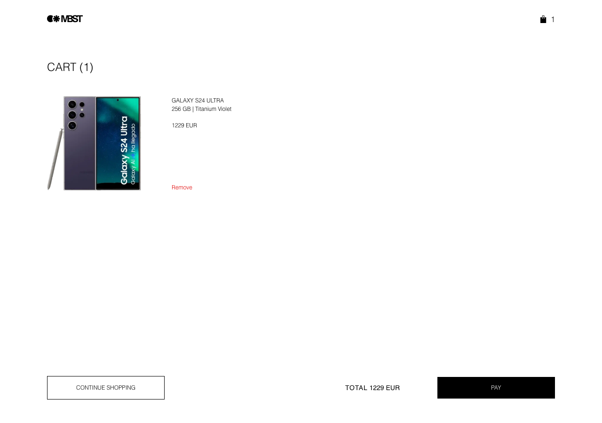
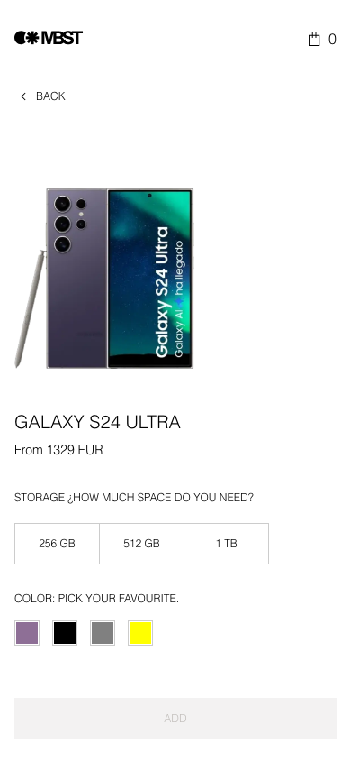

Listado en servidor
Home con los 20 primeros smartphones desde la API real, con reordenación animada al filtrar resultados.
Entrega · Napptilus Tech Labs · 23 junio 2026
Catálogo de smartphones desarrollado para la prueba frontend de Napptilus Tech Labs en el marco del Zara Web Challenge: búsqueda en tiempo real, configuración de color y almacenamiento, carrito persistente y capa de calidad con tests automatizados, CI y análisis estático.
Nombre: Cristina Fores
Proyecto: Zara Web Challenge
Repositorio: github.com/CristinaFores/zara-mobile-challenge
La aplicación se puede probar aquí mismo. El botón abre la tienda a pantalla completa en otra pestaña.
Home con los 20 primeros smartphones desde la API real, con reordenación animada al filtrar resultados.
El término de búsqueda vive en ?search=, con debounce de 300 ms. El
enlace es compartible y el historial del navegador funciona con atrás/adelante.
Selectores de color y almacenamiento, precio según la variante elegida, ficha técnica, productos similares y botón de añadir al carrito bloqueado hasta completar la selección.
Continuidad visual entre catálogo y detalle, fundido al cambiar de color y animación de la rejilla al actualizar resultados.
El proxy /api/images recorta fondo, redimensiona y cachea las fotos de
la API sin exponer la clave al navegador.
GitHub Actions en cada PR, SonarCloud, tests unitarios con Jest y Playwright en
e2e/ para los flujos principales.
Detalle de qué controla cada parte de la URL, cómo se optimizan las imágenes y qué garantías tiene el carrito — incluido lo que está cubierto por tests.
Nada de configuración vive solo en memoria del cliente: todo lo compartible va en la ruta o en query params.
| Dónde | Parámetro | Para qué sirve |
|---|---|---|
/ |
?search= |
Filtra el catálogo contra la API (no solo en cliente). Debounce de 300 ms. El enlace es compartible y atrás/adelante restaura la búsqueda. |
/products/[id] |
[id] en la ruta |
Identifica el móvil concreto. Si no existe en la API, la app responde con página 404. |
/products/[id] |
?color= |
Nombre del color elegido. Cambia la imagen del hero y forma parte de la clave al
añadir al carrito. Actualiza la URL con history.replaceState (sin
refetch del RSC). Sin valor válido, el botón de compra sigue deshabilitado.
|
/products/[id] |
?storage= |
Capacidad elegida (p. ej. 256 GB). Fija el precio mostrado y la
variante que se guarda en el carrito. Actualiza la URL con
history.replaceState (sin refetch del RSC). Sin valor válido, el
botón de compra sigue deshabilitado.
|
/cart |
— |
El carrito no usa query params: persiste en localStorage. Cada línea
enlaza de vuelta al detalle con los mismos color y
storage.
|
Las fotos de la API llegan grandes y con fondo blanco. El navegador nunca pide la imagen cruda con credenciales.
/api/images.
El cliente pide /api/images?url=…&w=…&q=…; el servidor descarga
la foto, la procesa y devuelve WebP con cabeceras de caché.
imageProcessing.test.ts y api/images/route.test.ts.
Cada línea es una configuración completa (móvil + color + almacenamiento), no solo el id del producto.
Existe syncPrices(mapa) en el reducer: actualiza precios por clave y
recalcula el total sin tocar color, imagen ni nombre. Testeado; listo para conectar
si la API expusiera cambios de precio en vivo.
Clave id::color::capacidad. El mismo móvil en dos colores o dos
memorias genera dos líneas distintas. Repetir la misma configuración no duplica la
línea.
Hidratación solo en cliente. Al leer, se valida el JSON y se descartan entradas
corruptas. Tests en
cartStorage.test.ts y E2E de recarga en e2e/cart.spec.ts.
Al pulsar añadir, la línea guarda el precio de la variante elegida. El total del
carrito se recalcula desde esas líneas. Cubierto en
CartContext.test.tsx.
Un id inválido en /products/[id] dispara notFound(). La
API del reto no expone stock: el carrito no elimina líneas automáticamente si un
producto desaparece del catálogo.
Playwright cubre carrito vacío, añadir con configuración, ver total, eliminar línea y persistencia tras recargar la página.
| Paso | Artefacto | Propósito |
|---|---|---|
| Contrato técnico | AGENTS.md | Reglas de arquitectura, API, testing, accesibilidad y convenciones del repositorio. |
| Diseño | DESIGN.md |
Contrato visual generado desde el Figma del reto vía MCP Figma; tokens en
_variables.scss, layout y copy canónica para agentes UI.
|
| Documentación | README.es.md · README.md | Stack, arquitectura por features, pipeline de imágenes, CI/CD y guía de ejecución. |
| Código | src/features/ + src/shared/ |
Dominios separados — catálogo, detalle y carrito — con servicios y componentes compartidos aislados. |
| Tests unitarios | src/**/*.test.ts(x) |
270 tests en formato BDD; la red se simula en la capa HTTP, no se mockea la lógica de negocio. |
| Tests E2E | e2e/ | Playwright sobre listado, detalle y carrito en Chromium. |
| CI | ci.yml · sonar-project.properties | En cada PR: typecheck, lint, tests, build, E2E y análisis SonarCloud. |
Resumen de cumplimiento del enunciado. El detalle técnico está en el README y en AGENTS.md.
Rejilla de 20 productos, búsqueda contra la API con debounce, contador de resultados, estados de carga/error/vacío y navegación al detalle.
Imagen principal, selectores de color y almacenamiento, precio según variante, especificaciones, productos similares y botón deshabilitado hasta elegir ambas opciones.
Guardado en localStorage sin romper el SSR, identidad por producto +
color + almacenamiento, eliminar líneas, total, contador en cabecera y volver al
catálogo.
La clave API_KEY solo existe en servidor. Las peticiones con
credenciales pasan por route handlers o server components, nunca por variables
NEXT_PUBLIC_.
Sass + BEM + CSS Modules, Helvetica, bordes de 1 px, diseño mobile-first,
next/image y tokens en _variables.scss.
TypeScript strict, HTML semántico, metadata SEO, consola sin errores, README bilingüe y esta página de entrega con demo embebida.
next/image.
?search=) navega con el router de Next. Color y almacenamiento
(?color=, ?storage=) actualizan la barra de direcciones con
history.replaceState para enlaces profundos, atrás/adelante y refresh sin
volver a ejecutar el RSC ni remontar imágenes del detalle.
/api/images normaliza fondo y encuadre en servidor, sirve WebP con caché
y evita upscale agresivo. La clave de la API no llega al navegador.
DESIGN.md y en los tokens de
src/scss/_variables.scss.
prefers-reduced-motion.
public/entrega/screenshots/ tomadas sobre el deploy real para
contrastar catálogo, detalle, carrito y mobile con el Figma del challenge.
El repositorio está preparado para evolucionar sin romper la arquitectura por features ni los gates de calidad.
Empezar por DESIGN.md y AGENTS.md, los tokens en
src/scss/_variables.scss y la convención BEM en CSS Modules.
Ejemplo — filtros por marca: tipos en src/shared/types, lógica en
features/catalog, test unitario y spec E2E antes del merge.
Localmente:
npm run typecheck && npm run lint && npm run test && npm run build. La
CI añade E2E y SonarCloud encima del mismo gate.



